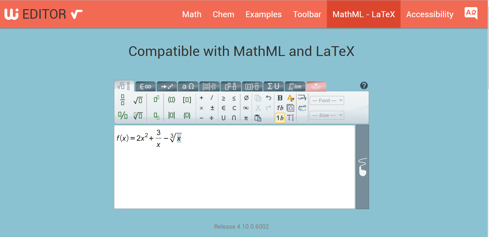
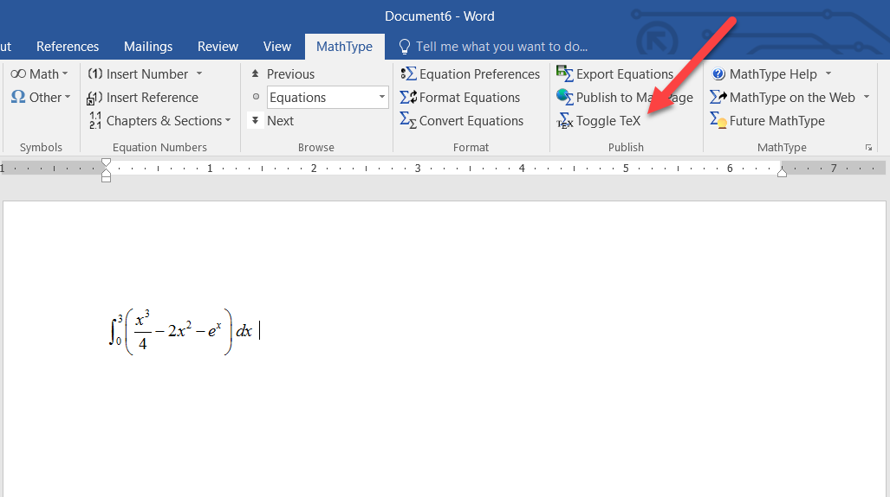
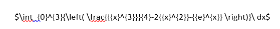
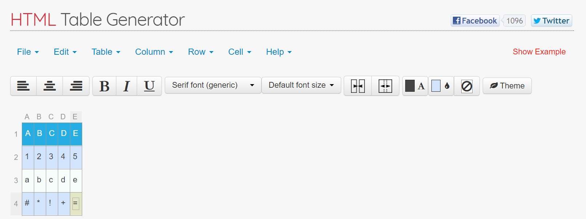
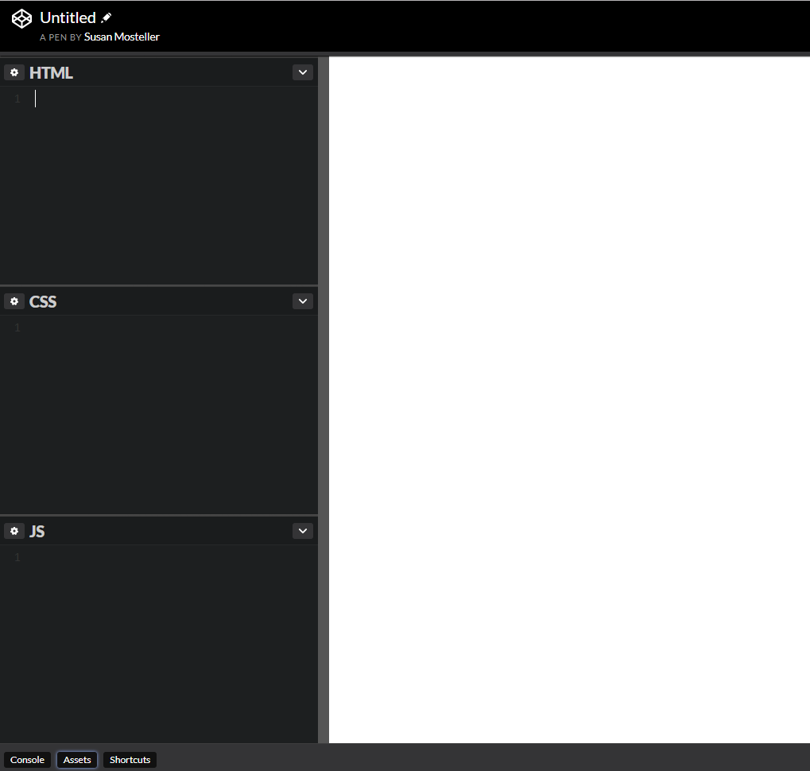

Susan Mosteller scmosteller@pstcc.edu
Mary Monroe-Ellis mmonroeellis@pstcc.edu
Create accessible documents and content that can be easily edited in a Learning Management System and can be read by screenreaders.
\[\int_0^3\left(\frac{x^3}4-2x^2-e^x\right)\;\operatorname dx\;\]
MathType
Markdown guides you to create an accessible document without these issues.
MarkDown is a text-to-HTML conversion tool.
MarkDown allows you to write using an:
easy-to read
easy-to-write
plain text format
that converts it to structurally valid XHTML (or HTML).
-daringfireball.netMarkdown is plain-text: margins, tab stops, page breaks, extra spacing, and formatting are all unsupported, ignored and therefore dropped. This is limiting but also helpful with accessibility.
Multiple spaces, or line breaks in a markdown file are ignored when converted to an HTML document. A Word document copied into a markdown editor is stripped of all formatting and flourishes.
Formatting and styles can be added once we have an HTML file, but Markdown lets you focus on content first.
Basic formatting is easy using simple keystrokes found on the Markdown Reference Guide
To edit and create our formulas we use the Wiris editor. This can also be used to copy equations that were previously made in MS Word using third-party plugins. Once we use the editor we have the tex code to paste into our markdown file.
Right click on the math formula to see more options.
\[\int_0^3\left(\frac{x^3}4-2x^2-e^x\right)dx\]
Listen to the Jaws screenreader process the above formula:
The above formula is written using tex or latex code. \int_0^3\left(\frac{x^3}4-2x^2-e^x\right)dx
Don't worry we don't need to learn tex code!
Equations that were created in MathType can be converted to LaTeX without retyping them in Wiris.
 To edit and create tables we use the HTML Table Generator.



To edit and create Markdown we use CodePen.
JavaScript Library code looks through the document to find the LaTeX and converts that to MathML and Presentation Math which allows the screenreader to step through it.
# This is a Heading 1
## Lists (this is a heading 2)
* Item 1 with *Italics*
* Item 2 with **Bold**
* Sub-item 1
* Item 3
This is a link to Google:
[Google Search](google.com)
This is an image: